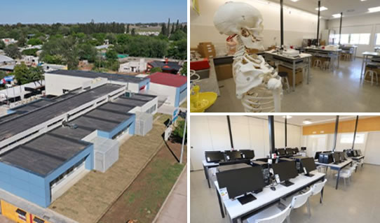

¿Quienes Somos?
Alumnos de 5to Año de la Escuela Experimental PRo-A sede Laboulaye.

Nuestra historia:
Iniciamos este proyecto a partir de un curso de Full Stack. Nuestra idea es ayudar a los ciudadanos de Laboulaye a encontrar trabajo de una manera más organizada y sencilla.
Objetivo:
el principal objetivo de este proyecto es facilitar la búsqueda de empleo para los ciudadanos de Laboulaye. Reconociendo la necesidad de una solución más organizada y sencilla, el equipo decidió crear una plataforma en línea que conecte a los empleadores locales con los buscadores de empleo.
Carateristicas
La plataforma desarrollada cuenta con características específicas para lograr este objetivo. Permite a los usuarios crear perfiles detallados que resalten sus habilidades, experiencia laboral y educación. Los empleadores pueden publicar ofertas de trabajo y buscar candidatos adecuados según sus requisitos específicos. A su vez, los buscadores de empleo pueden explorar las oportunidades disponibles, postularse a los puestos y establecer comunicación directa con los empleadores a través de la plataforma.
Optimización:
Además, el proyecto también ofrece recursos adicionales para mejorar las habilidades de los buscadores de empleo. Esto incluye consejos para la elaboración de currículos, preparación de entrevistas y desarrollo de habilidades profesionales clave.